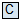
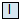
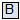
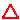
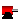
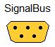
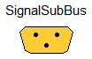

This package contains definitions for the graphical layout of components which may be used in different libraries. The icons can be utilized by inheriting them in the desired class using "extends" or by directly copying the "icon" layer.
Copyright © 1998-2010, Modelica Association, DLR, AIT, and Modelon AB.
This Modelica package is free software; it can be redistributed and/or modified under the terms of the Modelica license, see the license conditions and the accompanying disclaimer in Modelica.UsersGuide.ModelicaLicense2.
Extends from Icons.Package (Icon for standard packages).
| Name | Description |
|---|---|
| Icon for general information packages | |
| Icon for contact information | |
| Icon for release notes in documentation | |
| Icon for external references | |
| Icon for packages containing runnable examples | |
| Icon for runnable examples | |
| Icon for standard packages | |
| Icon for packages containing base classes | |
| Icon for package containing variants | |
| Icon for packages containing interfaces | |
| Icon for packages containing sources | |
| Icon for packages containing sensors | |
| RotationalSensor | Icon representing a round measurement device |
| Icon representing a linear measurement device | |
| Icon for package containing property classes | |
| MaterialProperty | Icon for property classes |
| Icon for functions | |
| Icon for records | |
|  TypeComplex | Icon for Complex types |
| Icon for Real types | |
|  TypeInteger | Icon for Integer types |
|  TypeBoolean | Icon for Boolean types |
| Icon for String types | |
| Icon for signal bus | |
| Icon for signal sub-bus | |
|  UnderConstruction | |
| ObsoleteModel | Icon for classes that are obsolete and will be removed in later versions |
| This icon will be removed in future Modelica versions, use Package instead | |
| This icon will be removed in future Modelica versions, use Package instead | |
| GearIcon | This icon will be removed in future Modelica versions |
|  MotorIcon | This icon will be removed in future Modelica versions. |
| Icon for general information packages |
type TypeReal "Icon for Real types" extends Real; end TypeReal ;
type TypeInteger "Icon for Integer types" extends Integer; end TypeInteger ;
type TypeBoolean "Icon for Boolean types" extends Boolean; end TypeBoolean ;
type TypeString "Icon for String types" extends String; end TypeString ;
This icon indicate classes containing only documentation, intended for general description of e.g., concepts and features of a package.
partial class Information "Icon for general information packages"end Information;
This icon shall be used for the contact information of the library developers.
partial class Contact "Icon for contact information"end Contact;
This icon indicates release notes and the revision history of a library.
partial class ReleaseNotes "Icon for release notes in documentation"end ReleaseNotes;
This icon indicates a documentation class containing references external documentation and litterature.
partial class References "Icon for external references"end References;
This icon indicates an example. The play button suggests that the example can be executed.
partial model Example "Icon for runnable examples"end Example;
This icon is designed for a rotational sensor model.
partial class RotationalSensor "Icon representing a round measurement device"end RotationalSensor;
This icon is designed for a translational sensor model.
partial class TranslationalSensor "Icon representing a linear measurement device"end TranslationalSensor;
This icon indicates a property class.
partial class MaterialProperty "Icon for property classes"end MaterialProperty;
This icon indicates Modelica functions.
partial function Function "Icon for functions"end Function;
This icon is indicates a record.
partial record Record "Icon for records"end Record;
This icon is designed for a Complex type.
Extends from Complex (Complex number with overloaded operators).
| Type | Name | Default | Description |
|---|---|---|---|
| Real | re | Real part of complex number | |
| Real | im | Imaginary part of complex number |
record TypeComplex "Icon for Complex types" extends Complex;end TypeComplex;

connector SignalBus "Icon for signal bus"end SignalBus;

This icon is designed for a sub-bus in a signal connector.
connector SignalSubBus "Icon for signal sub-bus"end SignalSubBus;
Library developers can use this icon to indicate that the respective model is under construction.
partial class UnderConstructionend UnderConstruction;
This partial class is intended to provide a default icon for an obsolete model that will be removed from the corresponding library in a future release.
partial class ObsoleteModel "Icon for classes that are obsolete and will be removed in later versions"end ObsoleteModel;
This icon of a gearbox will be removed in future versions of the library. Please use one of the icons of Mechanics.Rotational.Icons instead.
partial class GearIcon "This icon will be removed in future Modelica versions"end GearIcon;
This icon of an electrical motor model will be removed in future versions of the library. Please use a locally defined icon in your user defined libraries and applications.
partial class MotorIcon "This icon will be removed in future Modelica versions."end MotorIcon;
This icon indicate classes containing only documentation, intended for general description of e.g., concepts and features of a package.
This icon will be removed in future versions of the Modelica Standard Library. Instead the icon Information shall be used.
partial class Info "Icon for general information packages"end Info;